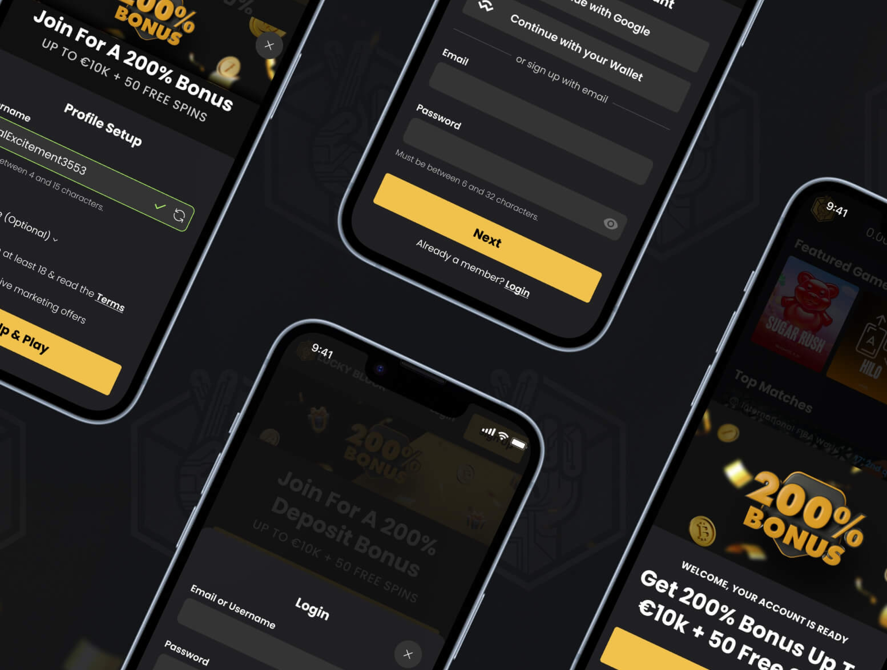
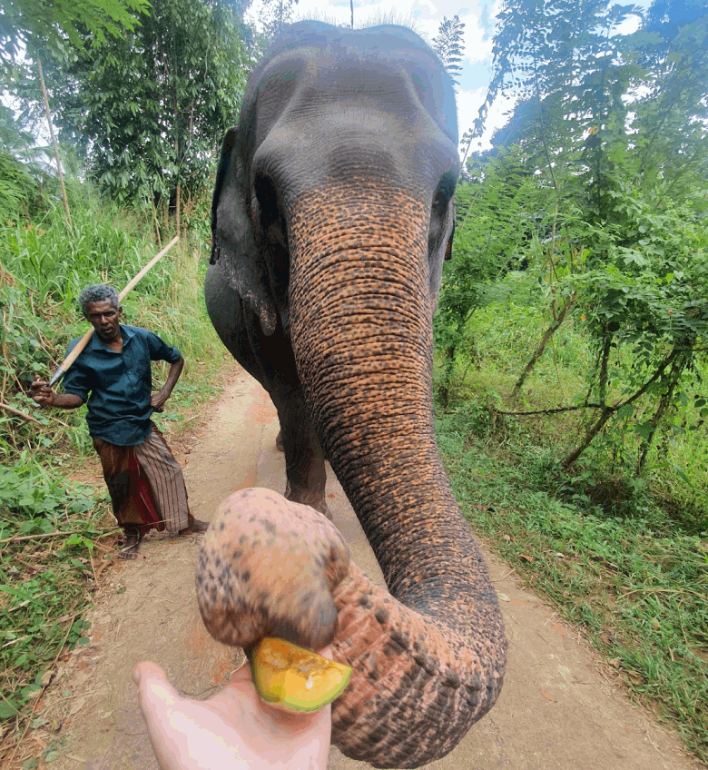

Clarity for App Grocery Orders
I led multiple product improvements for Milk & More, the UK grocery delivery service, where I solved a critical user pain point around customers selecting the wrong order frequency.

Design System for a Data-Dense Platform
Turning a news site into an odds comparison product. Built scalable design systems to simplify complex user journeys across desktop and mobile views.

Designing Euronics’ B2B and B2C platform end to end
I led the redesign of Euronics UK’s B2C store and B2B agent portal, replacing an old, hard-to-use site with a modern, on-brand platform. It brought purchasing from six disconnected systems down to one.

Streamlining Sign-up
Redesigning the LuckyBlock sign-up flow to eliminate friction points, streamline player onboarding, and optimise welcome offer conversion.

Collaboration transcends skill
I’ve always been fascinated by art, design, and how the things we build affect how people behave. When I’m not working, you’ll usually find me spending time with family, traveling to experience new cultures, reading, or scuba diving. Anything that keeps me curious and learning.
Get in touch